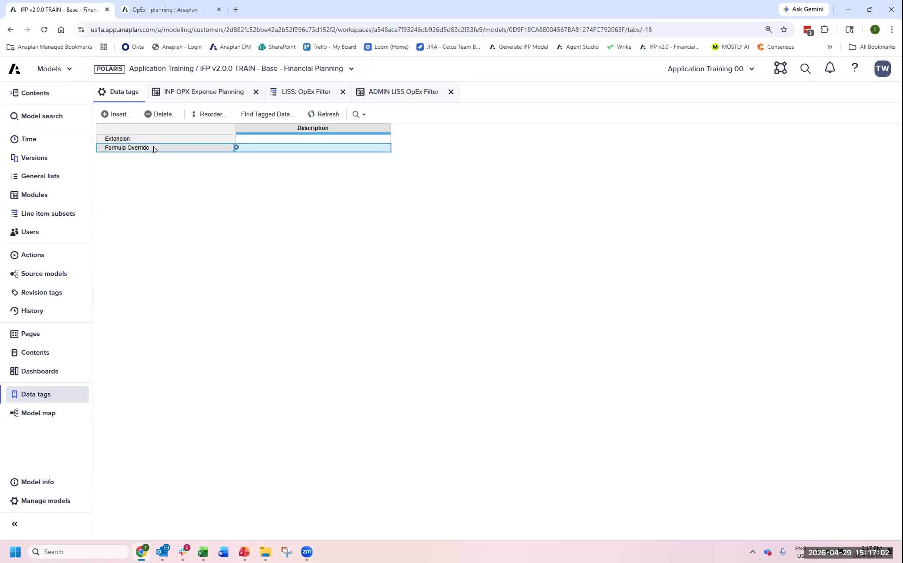
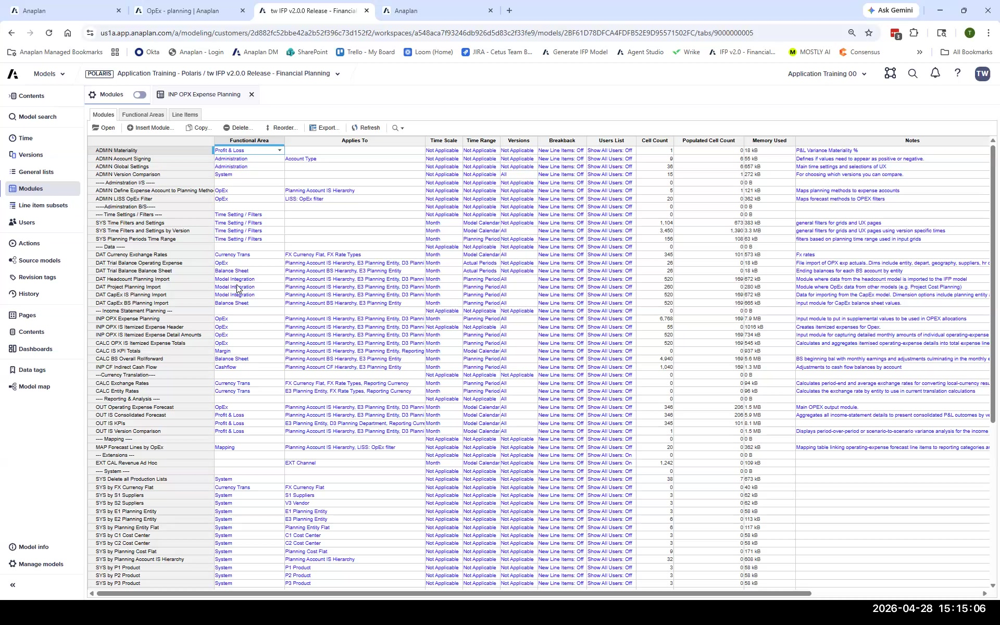
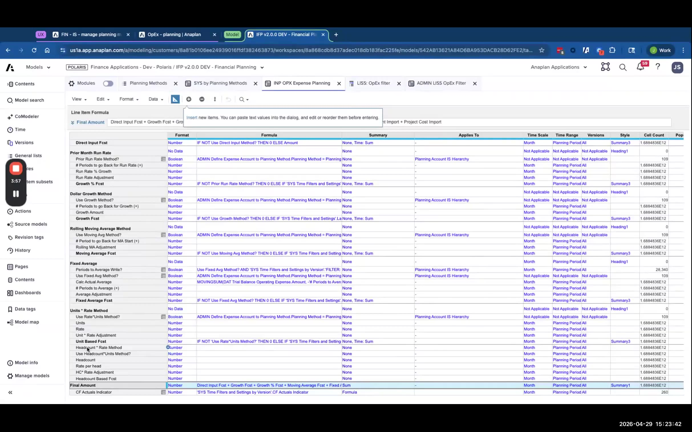
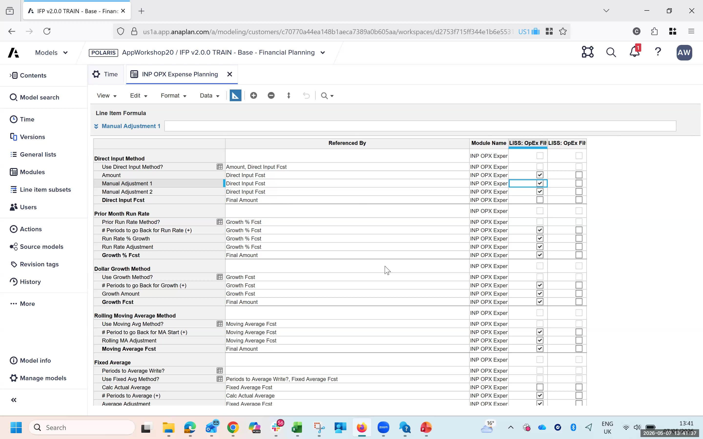
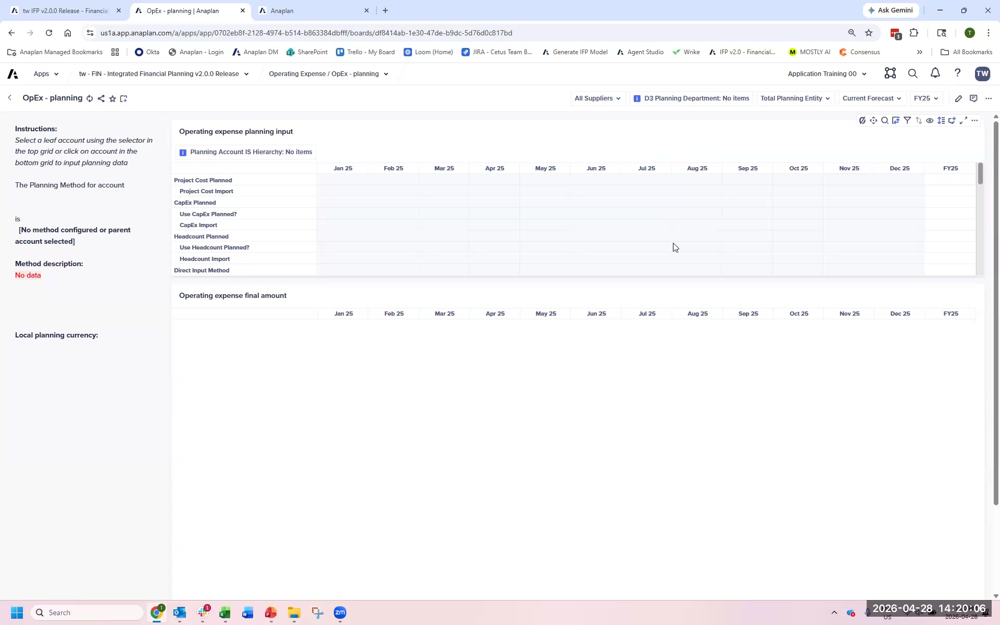
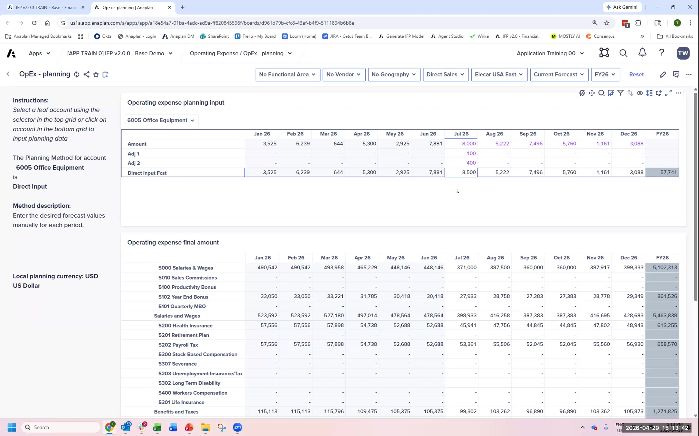

Lab B: Direct Input + Adjustments
Build a two-layer adjustment extension on the Direct Input planning method
Business Requirement
FintechCo's budget holders want to plan certain OpEx accounts using direct input — but with two adjustment layers on top: a management override and a regional adjustment. The formula is:
The IFP base model supports Direct Input as a single-value method. Adding two adjustment layers requires extending the model. This is Lab B.
Work in the model your facilitator specifies — the IFPv2.0.0 train-base-financial-planning model (or similar). Do not work in your newly generated FintechCo model for this lab.
What You'll Build
Five changes to the IFP base model, in this exact order:
- Create data tags (Extension + Formula Override)
- Add Adjustment 1 and Adjustment 2 line items
- Modify the Final Amount formula to include the adjustments
- Update the OPEX filter line item subset
- Update the Admin line item subset
- 1From the Financial Planning model, navigate to Settings → Data Tags (or Model Settings → Manage Tags).
- 2Create a new tag: name = Extension. Save.
- 3Create a second tag: name = Formula Override. Save.
- 4These tags are now available on all line items in this model.
If you build extensions first and add tags later, you'll have to hunt down every line item you touched. Creating tags first takes 5 minutes and saves you from hours of archaeology later — especially after an upgrade.

- 1Open the INP OPX Expense Planning module (or equivalent input module for OpEx) in blueprint mode.
- 2Find the Direct Input Forecast line item. This is the base line item you are extending.
- 3Add a new line item below it: name = Adjustment 1. Format = Number. Applies To = same as Direct Input Forecast.
- 4Copy the Access Driver (DCA) from Direct Input Forecast to Adjustment 1. This ensures Adjustment 1 only shows when the Direct Input method is active for the account.
- 5Set Write Rule on Adjustment 1: writable by users.
- 6Repeat steps 3–5 for Adjustment 2.
- 7Tag both new line items with the Extension data tag.
- 8Save and publish.
Copy the line item settings from Direct Input Forecast rather than creating from scratch. Applies-To configuration, dimension settings, and time scope must match exactly.

- 1In blueprint mode, find the Final Amount line item in the same module.
- 2Open the formula. It currently calculates the total based on the active planning method.
- 3Find the section of the formula that handles the Direct Input method (look for an IF or CASE statement).
- 4Modify the Direct Input branch to add:
+ 'Adjustment 1'[ITEM: ITEM] + 'Adjustment 2'[ITEM: ITEM](exact syntax may vary based on your model's line item names). - 5Validate the formula — confirm it has no errors.
- 6Tag the Final Amount line item with Formula Override data tag.
- 7Also tag it with Extension data tag.
- 8Save.
You have just modified a base model formula. If Anaplan releases an IFP update that changes this module, your formula override may be lost. The Formula Override tag is your marker for post-upgrade review. Document the formula change externally as well.

- 1Navigate to the OPEX filter line item subset (typically in a SYS or ADMIN module — ask facilitator if you can't find it).
- 2Open the subset in edit mode.
- 3Add the following line items to the subset: Direct Input Forecast, Adjustment 1, Adjustment 2.
- 4The subset controls which line items surface to users in the UX. All three must be included.
- 5Save the subset.
The filter subset controls UX visibility (what users see). The admin subset (next step) controls the top-level admin configuration page. Both need to be updated — they serve different purposes.

- 1Navigate to the Admin line item subset (in the ADMIN module — typically ADMIN OPX or similar).
- 2Find the Final Amount row in the admin grid.
- 3Note which planning method(s) Final Amount is associated with (specifically the Direct Input method entry).
- 4Copy that method association to Direct Input Forecast, Adjustment 1, and Adjustment 2.
- 5Save.
- 6Now test: navigate to the UX, open the Operating Expenses planning page, select a Direct Input account, refresh.
- 7Verify: Direct Input Forecast, Adjustment 1, and Adjustment 2 are all visible. Enter test numbers. Confirm Total = Direct Input + Adj1 + Adj2.
Enter actual numbers in all three fields and verify the math. A formula error could produce a result that looks correct but is actually ignoring one of the adjustments. Always put numbers in and verify the sum.


Debrief Questions
- What is the risk of modifying the Final Amount formula? How would you mitigate it for a production delivery?
- How would you document this extension for the next consultant on the project?
- If FintechCo asked for a third adjustment layer six months after go-live, how would you add it? What's the simplest change?
- Why do we use an access driver (DCA) on the adjustment line items instead of just hiding them in the UX?
- What happens to your formula override if Anaplan releases an IFP 2.1 upgrade?
When the group reconvenes, the facilitator will walk through the reference solution and discuss the key risk decisions.